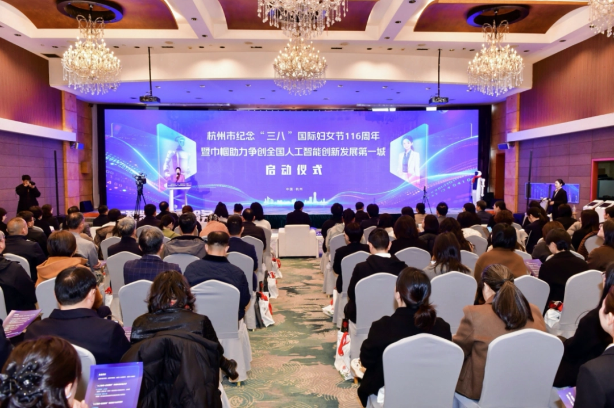
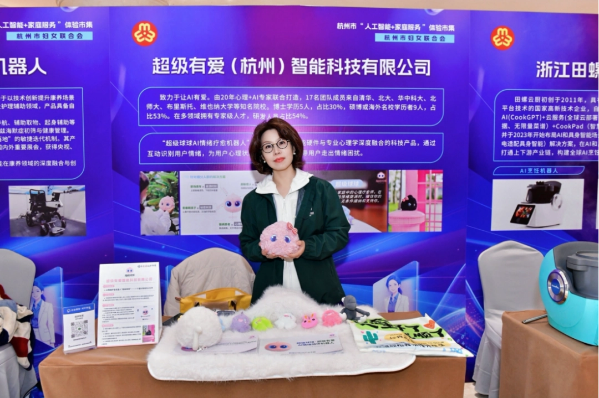
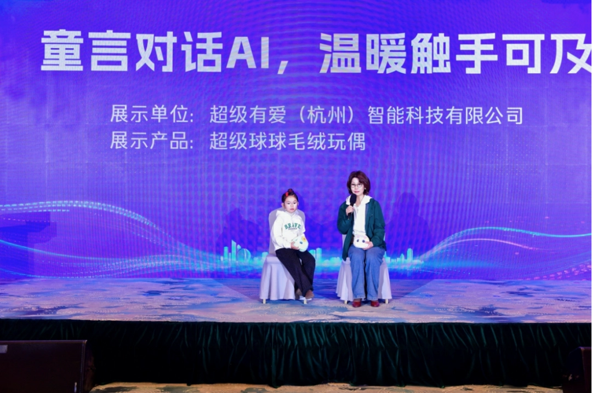
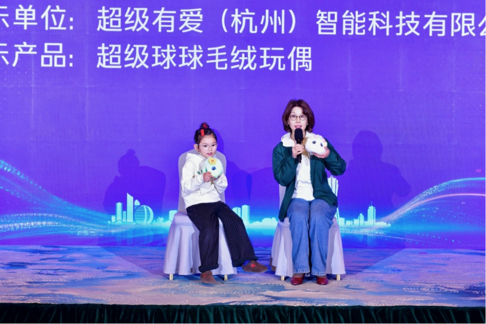
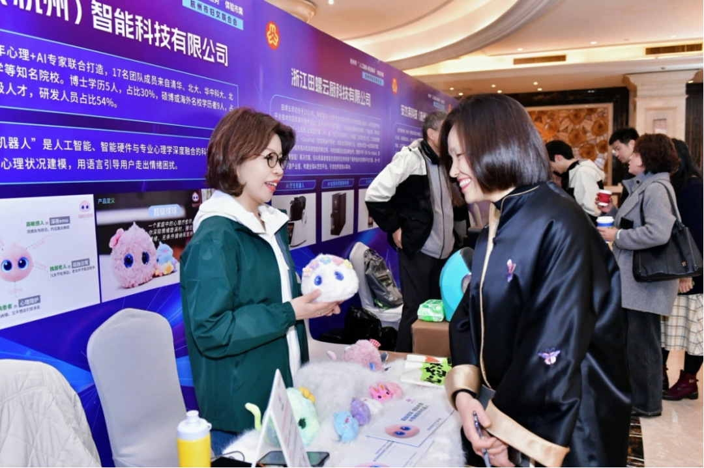
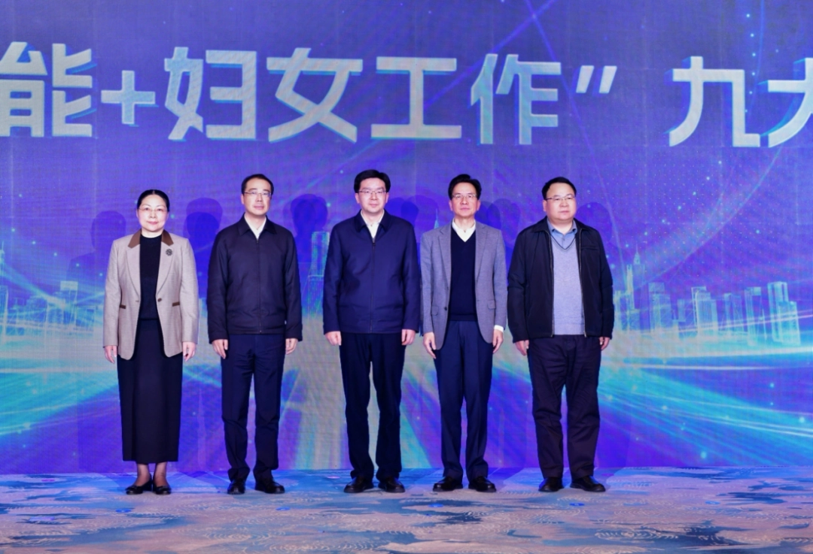

活动中，作为余杭区⼈⼯智能⾏业的明星企业，“超级有爱”以互动表演的形式进⾏了《童⾔对话AI，温暖触⼿可及》主题分享。“超级有爱”销售总监⾼丽春⽼师更与⼀位6岁的⼩朋友共同登台，并现场与“超级有爱”创新研发的AI情绪陪伴机器⼈“超级球球”互动对话，赢得了现场领导、嘉宾⼀致好评。

此外，在“⼈⼯智能+家庭服务”场景展⽰和产品体验环节，“武林⼤妈”体验官团队还对“超级球球”进⾏了深度体验。这款融合AI技术的智能⼼理疗愈玩偶，以温暖的交互⽅式为家庭带来了全新的陪伴体验，让在场者切实感受


到⼈⼯智能如何为家庭⽣活增添温度。作为杭州市妇联主办的重要活动，本次活动受到了杭州电视台重点报道，并邀请到市委副书记⻢⼩秋，市⼈⼤常委会副主任陈卫强，市政府副市⻓鲁霞光，市政协副主席陈如根，省妇联党组成员、副主席俞国娟等出席。各界领导对“超级球球”的品牌定位、核⼼技术与⽤⼾体验均给予了⾼度评价。

在⼈⼯智能⾼速发展的当下，杭州市已成功孵化出 宇树科技、 强脑科技、深度求索等“六⼩⻰”企业，成为杭州新质⽣产⼒的标志性符号。作为⼀家专注于“AI情绪疗愈”与家庭服务场景创新的企业，未来，“超级有爱”也将持续深耕AI领域，努⼒成⻓为杭州在AI垂直应⽤领域的⼜⼀条“潜⼒⻰”，让AI技术为更⼴泛⼈群带来温暖与关怀。
